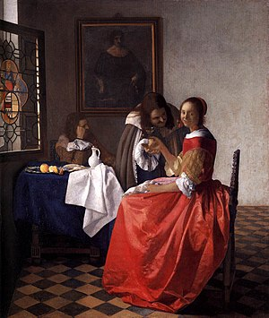

“ 2. Johannes Vermeer ”
Johannes Vermeer (โยฮันเนส เฟอร์เมร์) : ศิลปินผู้ได้ขึ้นชื่อว่าเป็นปรมาจารย์แห่งแสงและเงา
ประวัติโดยย่อของ : โยฮันเนส ไรเนียส์โซน เฟอร์เมร์ หรือที่รู้จักกันในชื่อ โยฮัน เฟอร์เมร์ เกิดเมื่อปี ค.ศ. 1632 ในเมืองเดลฟท์ ประเทศเนเธอร์แลนด์ เป็นจิตรกรเอกแห่งยุคทองของเนเธอร์แลนด์ ผลงานของเขามีชื่อเสียงโด่งดังในด้านความเหมือนจริง การใช้แสงเงาอย่างประณีต และภาพวาดที่ถ่ายทอดถึงชีวิตประจำวันของชนชั้นกลาง
เฟอร์เมร์ เสียชีวิตลงในวันที่ 15 ธันวาคม ค.ศ. 1675 และใน 200 ปีให้หลังถึงได้มีชื่อเสียงขึ้นมาจากภาพ 66 ภาพของเขาแต่มีเพียง 34 ภาพที่ได้รับการยอมรับ
ผลงานต่างๆของ Johannes Vermeer...
Girl with a Pearl Earring (1665) by Johannes Vermeer
Milkmaid (1661) by Johannes Vermeer
Lady with a Wine Glass (1660) by Johannes Vermeer
ผลงานที่ชื่นชอบเป็นการส่วนตัว...
Girl Reading a Letter at an Open Window (1657-59) by Johannes Vermeer
"เป็นภาพของหญิงสาวอาจมีความหมายว่าเกี่ยวข้องกับอารมณ์รัก แต่ถ้ามองอีกมุมอาจเหมือนหญิงสาวถูกกักขังอยู่"
ก่อนหน้า หน้าต่อไป